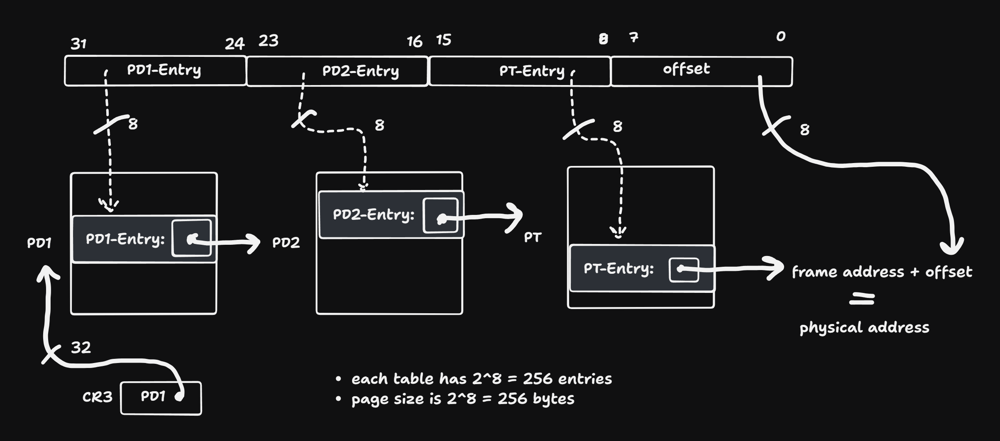

Kleine M (vor allem wenn M < 1024 und M ein Teiler von 1024 ist) → mehrere Zugriffe pro Seite → besseres TLB-Verhalten
Große M (≥ 1024) → jeder Zugriff auf neue Seite → mehr TLB-Misses
Dieses Verhalten kann mit der folgenden Python-funktion simuliert werden:
def tlb_pages(M, N, ints_per_page=1024):""" Simulates the number of distinct pages accessed in the loop: for (int i = 0; i < N; i += M) X[i]++; Parameters: - M: step size - N: total number of elements in the array - ints_per_page: number of integers that fit in a single page (default 4096 bytes / 4 bytes = 1024) Returns: - The number of distinct pages accessed """ pages =set()for i inrange(0, N, M): page = i // ints_per_page pages.add(page)returnlen(pages)
Einige Simulationen:
print(tlb_pages(1, 65536)) # Should be 64 → fills exactly 64 pagesprint(tlb_pages(1024, 65536)) # Should be 64 → each access on a new pageprint(tlb_pages(256, 65536)) # Should be 64 / 4 = 16 → reuse of pagesprint(tlb_pages(2048, 65536)) # Should be 32 → skips every second pageprint(tlb_pages(1, 100000)) # result: 98 → causes TLB misses
64
64
64
32
98
Das Verhalten des TLB ändert sich deutlich, wenn der Code mehrfach oder regelmäßig ausgeführt wird – etwa in einer oft aufgerufenen Funktion oder in einer heißen Schleife.
TLB ist zustandsbehaftet und begrenzt
Er kann nur eine bestimmte Anzahl an Seitenadressen speichern (z. B. 64).
Wird die Anzahl der zugreifenden Seiten pro Schleife > 64, kommt es zu Ersetzungen (evictions), meist nach dem LRU-Prinzip.
Wiederholte Ausführung kann TLB verbessern – oder verschlechtern
Wenn dieselben Seiten wiederverwendet werden (z. B. bei N ≤ 64 * 1024), bleiben TLB-Einträge erhalten → nach der ersten Ausführung keine weiteren Misses.
Wenn mehr als 64 Seiten verwendet oder ständig neue Seiten benötigt werden, werden TLB-Einträge ständig ersetzt → TLB-Misses bei jedem Aufruf.
TLB-Arbeitsmenge (working set)
Die „TLB-Arbeitsmenge“ ist die Menge der Seiten, die eine Funktion während der Ausführung benötigt.
Passt diese Menge vollständig in den TLB, funktioniert alles effizient.
Ist sie größer, kommt es zu wiederholten Zugriffen auf die Page Table → langsam.
Zugriffsart ist entscheidend
Kleine Schrittweite M → viele Zugriffe auf dieselbe Seite → hohe Wiederverwendung → TLB effizient.
Große Schrittweite M ≥ 1024 → jeder Zugriff auf eine neue Seite → hoher TLB-Druck, vor allem bei vielen Funktionsaufrufen.
Aufgabe 4
Beim Wechsel zwischen Prozessen wird der TLB in der Regel geleert, da jeder Prozess einen eigenen virtuellen Adressraum mit einer eigenen Seitentabelle besitzt. Die im TLB gespeicherten Einträge des vorherigen Prozesses wären im neuen Kontext ungültig oder sogar sicherheitskritisch.
Beim Wechsel zwischen Threads desselben Prozesses bleibt der TLB hingegen erhalten, da alle Threads denselben Adressraum und dieselbe Seitentabelle nutzen. Die vorhandenen TLB-Einträge bleiben daher gültig.
Moderne Systeme mit Address Space Identifiers (ASIDs) können einen vollständigen TLB-Flush beim Prozesswechsel vermeiden, indem sie TLB-Einträge pro Prozess kennzeichnen und nur die jeweils relevanten aktiv halten.
Kein Flush - Was kann Schiefgehen?
Wenn der TLB beim Kontextwechsel nicht geleert wird, kann es zu schwerwiegenden Sicherheitsproblemen kommen. Das folgende Beispiel zeigt, was konkret passieren kann:
Angenommen, Prozess A greift auf die virtuelle Adresse 0x00400000 zu, welche in seiner Seitentabelle korrekt auf die physische Adresse 0x1A300000 abgebildet wird. Diese Übersetzung wird im TLB zwischengespeichert.
Nun findet ein Kontextwechsel zu Prozess B statt. Auch Prozess B verwendet die virtuelle Adresse 0x00400000, aber in seiner eigenen Seitentabelle sollte sie auf eine völlig andere physische Adresse zeigen, z. B. 0x2B400000.
Wenn der TLB nicht geleert wird, verwendet der Prozessor beim Zugriff durch Prozess B weiterhin die alte TLB-Eintragung von Prozess A. Das führt dazu, dass Prozess B auf den physischen Speicher von Prozess A zugreift.
Die Folgen:
Sicherheitslücke: Prozess B kann sensible Daten von Prozess A einsehen.
Datenkorruption: Schreibzugriffe von Prozess B verändern versehentlich die Daten von Prozess A.
Verletzung der Speicherisolation: Ein zentrales Prinzip des Betriebssystems wird untergraben.
Um das zu verhindern, wird der TLB beim Wechsel des Prozesses entweder vollständig geleert oder — bei moderner Hardware — es werden ASIDs (Address Space Identifiers) verwendet, die TLB-Einträge pro Prozess kennzeichnen und voneinander trennen.
Aufgabe 6
Es gibt \(\frac{2^{32}}{2^{12}} = 2^{20}\) Einträge in der Tabelle. Jeder Eintrag ist 4 Byte groß
\[
\Rightarrow \text{ca. } 4\,\text{MB} \text{ Größe der Seitentabelle pro Prozess}.
\]
Bei einer invertierten Seitentabelle gibt es genau einen Eintrag pro Frame. Deshalb entspricht das Verhältnis der Tabellengröße zum physischen Speicher exakt dem Verhältnis der Größe eines Eintrags zur Frame- bzw. Seitengröße:
Geg. sei ein System mit einem TLB und einer hierarchischen Seitentabelle mit \(k\) Stufen. Die TLB-Trefferquote sei \(h\), die Zugriffszeit auf den TLB sei \(t_{\text{TLB}}\), und ein RAM-Zugriff dauere \(t_{\text{RAM}}\). Um eine Seite im Speicher zu lesen, muss zunächst die Adresse übersetzt und anschließend auf die eigentlichen Daten zugegriffen werden. Es gibt zwei Fälle:
Bei einem TLB-Treffer (Wahrscheinlichkeit \(h\)) erfolgt die Übersetzung über den TLB, was \(t_{\text{TLB}}\) dauert, gefolgt von einem Datenzugriff mit \(t_{\text{RAM}}\). Gesamtzeit: \(t_{\text{TLB}} + t_{\text{RAM}}\)
Bei einem TLB-Fehlzugriff (Wahrscheinlichkeit \(1 - h\)) muss die Seitentabelle durchlaufen werden, wobei \(k\) RAM-Zugriffe nötig sind. Anschließend folgt der Zugriff auf die Daten mit weiteren \(t_{\text{RAM}}\). Gesamtzeit: \((k + 1) \cdot t_{\text{RAM}}\)
Wenn \(h\) klein ist, dominiert der zweite Term, und der Zugriff ist im Mittel etwa \((k + 1)\)-mal so teuer wie bei einem TLB-Treffer.
In der Praxis tritt dieses Problem jedoch kaum auf, da reale Programme ausgeprägte Lokalität aufweisen. Aufgrund temporaler Lokalität (wiederholte Zugriffe auf kürzlich genutzte Seiten) und spatialer Lokalität (benachbarte Adressen werden gemeinsam genutzt, z. B. in Arrays) ist die TLB-Trefferquote typischerweise sehr hoch (oft über 95 %). Deshalb amortisiert sich die Existenz eines TLB deutlich.
Das zugrunde liegende Modell ist jedoch in mehreren Punkten idealisiert und in der Praxis eingeschränkt:
Es nimmt gleichverteilte Zugriffe auf alle Seitentabelleneinträge an, ignoriert also die reale Zugriffslokalität.
Seitentabelleneinträge werden ggf. auch intern gecacht, was die Zahl tatsächlicher RAM-Zugriffe reduziert.
Es berücksichtigt keine Nebeneffekte wie TLB-Flushes bei Kontextwechseln, Prefetching, oder andere Optimierungen der Speicherhierarchie.
Daher ist das Modell gut geeignet für eine theoretische Analyse, aber es bildet die tatsächliche Effizienz realer Systeme nur vereinfacht ab.
Aufgabe 8

3-level Seitentabelle
Das Diagramm zeigt die Übersetzung einer 32-Bit-Adressierung in einem hypothetischen System mit einer dreistufigen Seitentabellenhierarchie und einer Seitengröße von 256 Byte (also \(2^8\)). Die logische Adresse wird dabei in vier gleich große Abschnitte zu je 8 Bit aufgeteilt:
Bits 31–24: Index in die oberste Tabelle (PD1)
Bits 23–16: Index in die zweite Tabelle (PD2)
Bits 15–8: Index in die dritte Tabelle (PT)
Bits 7–0: Offset innerhalb der Seite
Jede Tabelle hat \(2^8 = 256\) Einträge. Dies ergibt sich daraus, dass jeder Tabellenindex 8 Bit umfasst und damit 256 mögliche Positionen adressieren kann. Da alle drei Tabellenebenen mit 8-Bit-Indizes angesprochen werden, besitzen alle drei Stufen genau 256 Einträge. Die Offset-Breite von 8 Bit entspricht der Seitengröße von 256 Byte.
Die 32-Bit-Adresse wird in vier Abschnitte zu je 8 Bit unterteilt. Jeder dieser Abschnitte dient als Index in eine bestimmte Stufe der Seitentabellenhierarchie:
Der erste Abschnitt (Bits 31–24) indexiert einen Eintrag in der obersten Tabelle (PD1).
Der zweite Abschnitt (Bits 23–16) indexiert die mittlere Tabelle (PD2).
Der dritte Abschnitt (Bits 15–8) indexiert die unterste Tabelle (PT).
Der vierte Abschnitt (Bits 7–0) ist der Offset innerhalb der Zielseite.
Jeder Eintrag in den Tabellen enthält eine physische Adresse, die zur nächsten Stufe führt:
Ein PD1-Eintrag enthält die physische Startadresse eines PD2-Tabellenrahmens.
Ein PD2-Eintrag enthält die Adresse eines PT-Tabellenrahmens.
Ein PT-Eintrag enthält die Adresse eines tatsächlichen physischen Seitenrahmens, also einer 256-Byte-Seite im Speicher.
Durch schrittweises Nachschlagen entlang der drei Tabellenstufen wird so der physische Rahmen gefunden, in dem sich die gewünschte Adresse befindet. Der Offset gibt schließlich die genaue Position innerhalb dieser Seite an.
Gibt es signifikante Unterschiede zwischen den Stufen?
Ja, in der Funktion der Stufen:
Die ersten beiden Stufen (PD1 und PD2) dienen rein der Navigation: Sie verweisen jeweils auf weitere Tabellen.
Erst die dritte Stufe (PT) enthält den tatsächlichen Verweis auf den physischen Speicherrahmen mit den Daten.
Auch bei der Interpretation der Einträge kann es Unterschiede geben (z. B. zusätzliche Statusbits oder Flags auf unteren Ebenen), aber im Grundprinzip enthalten alle Einträge physische Adressen von Seitenrahmen — entweder von Tabellen oder von Daten.
Jede Tabelle hat maximal \(2^8 = 256\) Einträge pro Instanz. Da es sich um eine 3-stufige Hierarchie handelt, ergibt sich im Extremfall (voll belegter Adressraum):